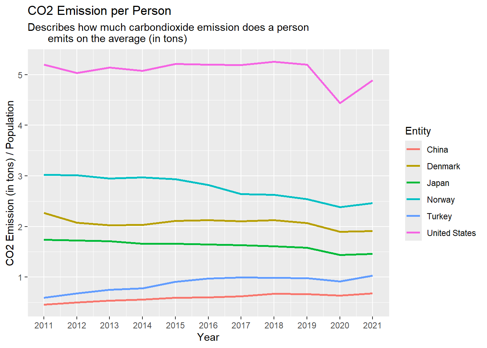
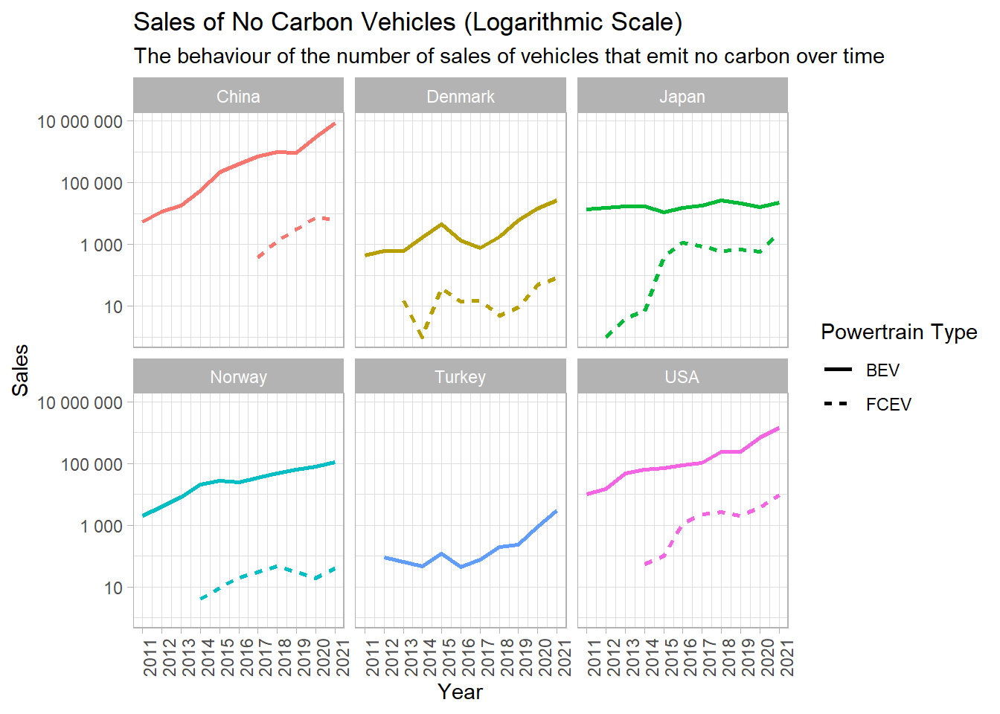
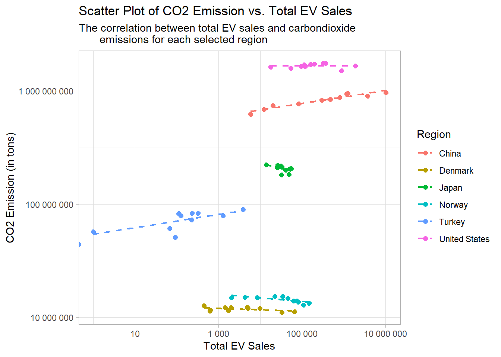

Code
library(dplyr)
library(ggplot2)
library(tidyr)
library(scales)
library(readr)
library(readxl)
library(ggthemes)
library(forcats)library(dplyr)
library(ggplot2)
library(tidyr)
library(scales)
library(readr)
library(readxl)
library(ggthemes)
library(forcats)my_data3 will be used for this part of analysis. Therefore, here is the general information that’s needed:
str(my_data3)'data.frame': 2232 obs. of 4 variables:
$ entity : chr "Afghanistan" "Africa" "Albania" "Algeria" ...
$ code : chr "AFG" "" "ALB" "DZA" ...
$ year : int 2011 2011 2011 2011 2011 2011 2011 2011 2011 2011 ...
$ transport_co2_emissions: num 6.71e+06 2.68e+08 2.36e+06 3.42e+07 6.28e+06 ...entity: A character column in my_data3 data set which represents the countries, continents, some income levels and the world.
code: A character column in my_data3 data set which represents the codes of the countries. (There are no codes for non-countries)
year: An integer column in my_data3 data set which represents the year.
transport_co2_emissions: A numeric column in my_data3 data set which represents the total carbon emission in tons.
Let’s take a look at the top 20 countries’ mean transportation carbondioxide emission from 2011 to 2021. To do this, the entity column of my_data3 has tidied to exclude the entities that are non-countries.
non_countries <- c(
"World",
"Upper-middle-income countries",
"Lower-middle-income countries",
"Low-income countries",
"High-income countries",
"European Union (27)",
"Europe",
"Asia",
"Africa",
"North America",
"South America",
"Oceania"
)
mean_co2_emission_by_country <- my_data3 |>
filter(!entity %in% non_countries) |>
group_by(entity) |>
summarize(mean_co2_emission_per_year = mean(transport_co2_emissions, na.rm = TRUE)) |>
mutate(entity_lumped = fct_lump_n(entity, n = 20, w = mean_co2_emission_per_year)) |>
group_by(entity_lumped) |>
summarize(mean_co2_emission_per_year = mean(mean_co2_emission_per_year, na.rm = TRUE), .groups = "drop")
head(mean_co2_emission_by_country)# A tibble: 6 × 2
entity_lumped mean_co2_emission_per_year
<fct> <dbl>
1 Australia 92412727.
2 Brazil 198190000
3 Canada 169276364.
4 China 830712727.
5 France 124309090
6 Germany 154080000 Note that to be able to see the mean carbondioxide emission of the rest of the world, it is combined into the observation Other.
It’s needed to see the transportation carbondioxide emission levels of countries through the years to get more information about them. Below, the amounts of some of those 20 countries’ (which are chosen specifically by team NRG) mean transportation carbondioxide emission (in tons) are displayed in the graph with the tidied version of my_data3.
ggplot(mean_co2_emission_by_country, aes(x = reorder(entity_lumped, mean_co2_emission_per_year), y = mean_co2_emission_per_year, fill = entity_lumped)) +
geom_col(width = 0.5) +
scale_y_continuous(labels = label_number(scale = 1, accuracy = 1)) +
coord_flip() +
labs(x = "Country",
y = "Mean CO2 Emission",
title = "Mean CO2 Emission by Country",
subtitle = "From 2011 to 2021 (in tons)") +
theme_light() +
theme(legend.position = "none")
Conclusions:
The histogram above clearly demonstrates that per capita CO₂ emissions in both the United States and China are significantly higher than the global average. This disparity has been one of the primary drivers behind the recent surge in renewable energy investments and efforts to move away from fossil fuels in both countries.
High emission levels have placed immense pressure on the United States and China to address climate change, accelerating their transition to sustainable energy sources.
The renewable energy initiatives undertaken by these two nations have created a significant domino effect worldwide, propelling the global shift toward the sustainability era. These efforts are not only aimed at reducing their own high emission levels but also serve as an example for other countries to transition to cleaner energy systems. One of the most tangible examples of this influence is the rapidly growing electric vehicle (EV) sector, driven by the United States as a hub of technological innovation and China as the world’s largest manufacturer and market for EVs.
The big majority of mean transportation carbondioxide emissions consisted of top 20 countries.
Turkey is 19th country with the largest mean transportation carbondioxide emission level.
After this plot, the group has chosen specific countries to explore their behaviour over time. United States and China has chosen for being in first two place in the mean carbondioxide emission standings, Norway and Denmark for not being in top 20 countries list, and even they have been successful at decreasing their emission, Turkey and Japan to investigate the important parameters that carbondioxide emission is dependent.
top6_countries <- c("United States", "Norway", "Denmark", "China", "Japan", "Turkey")
emission_by_country <- my_data3 |>
filter(entity %in% top6_countries)
head(emission_by_country) entity code year transport_co2_emissions
1 China CHN 2011 621890000
2 Denmark DNK 2011 12640000
3 Japan JPN 2011 223030000
4 Norway NOR 2011 14980000
5 Turkey TUR 2011 44000000
6 United States USA 2011 1633590000Here, emission_by_country is the more tidied version of my_data3 in which the interested countries’ carbondioxide emission is analyzed.
The line plot below visualizes how much tons of carbondioxide did each selected country emit:
ggplot(emission_by_country, aes(x = year, y = transport_co2_emissions, color = entity)) +
geom_line(size = 1) +
scale_y_continuous(
trans = "log10",
breaks = c(1, 10, 100, 1000, 10000, 100000, 1000000, 10000000, 100000000, 1000000000, 10000000000),
labels = c("1", "10", "100", "1K", "10K", "100K", "1M", "10M", "100M", "1B", "10B")
) +
scale_x_continuous(breaks = 2011:2021) +
facet_wrap(~ entity) +
labs(x = "Year",
y = "CO2 Emission",
title = "Carbondioxide Emissions by Entity (Logarithmic Scale)",
subtitle = "From 2011 to 2021 (in tons)"
) +
theme_bw() +
theme(legend.position = "none",
axis.text.x = element_text(angle = 90, hjust = 1)) # rotate x-axis labels
Here are some observations from this graph:
It can be observed that there is a persistent increase in the carbondioxide emission levels in Turkey and China. China is very close to emit one billion tons of carbondioxide.
Denmark has decreased its carbondioxide emission level after a 10-year horizon. Japan and Norway has a considerable decreasing trend in its carbondioxide emission level.
USA has the highest carbondioxide emission compared to others, exceeding one billion tons of carbondioxide.
This graph compares those 6 countries very well, but it’s not possible to see the trends for each of them. Therefore, the line plot below has been made to display the trend in the transportation carbondioxide emission levels of those exactly same countries to make a comparison.
ggplot(emission_by_country, aes(x = year, y = transport_co2_emissions, color = entity)) +
geom_line(size = 1) +
scale_y_continuous(
trans = "log10",
breaks = c(1, 10, 100, 1000, 10000, 100000, 1000000, 10000000, 100000000, 1000000000, 10000000000),
labels = c("1", "10", "100", "1K", "10K", "100K", "1M", "10M", "100M", "1B", "10B")
) +
scale_x_continuous(breaks = 2011:2021) +
facet_wrap(~ entity, scale = "free_y") +
labs(x = "Year",
y = "CO2 Emission",
title = "Carbondioxide Emissions by Entity (Logarithmic Scale)",
subtitle = "Carbondioxide emission trends from 2011 to 2021"
) +
theme_bw() +
theme(legend.position = "none",
axis.text.x = element_text(angle = 90, hjust = 1)) # rotate x-axis labels
Here are some observations from this graph:
It can be observed that China’s, USA’s and Turkey’s total transportation carbondioxide emission level have an increasing trend over years while Denmark’s, Norway’s and Japan’s have a decreasing trend.
All of the countries have a clear reduction of total transportation carbondioxide emission level in 2020. This is the effect of COVID-19 pandemic which causes a V-shaped pattern for all countries listed.
This graphs gives a lot of information about transportation carbondioxide emission levels of those countries. But is it correct to make a decision just by looking at these graphs only? May population be the reason of some countries’ low/high total transportation carbondioxide emission levels? Let’s analyze it.
str(my_data8)'data.frame': 2816 obs. of 3 variables:
$ entity : chr "Afghanistan" "Afghanistan" "Afghanistan" "Afghanistan" ...
$ year : int 2011 2012 2013 2014 2015 2016 2017 2018 2019 2020 ...
$ population: num 29347709 30560036 31622708 32792527 33831765 ...EXPLANATION ?
countries_selected <- c("United States", "Norway", "Denmark", "China", "Japan", "Turkey")
pop_n_co2 <- my_data3 |>
full_join(my_data8, by = c("entity" = "entity", "year" = "year")) |>
replace_na(list(transport_co2_emissions = 0, population = 0))
head(pop_n_co2) entity code year transport_co2_emissions population
1 Afghanistan AFG 2011 6710000 29347709
2 Africa 2011 267989980 0
3 Albania ALB 2011 2360000 2911500
4 Algeria DZA 2011 34220000 36903375
5 Angola AGO 2011 6280000 24218358
6 Antigua and Barbuda ATG 2011 190000 86349Here, two data frames has been joined to include carbondioxide emissions and population columns in one data frame and replace the NA values to zero.
pop_n_co2 <- pop_n_co2 |>
mutate(prop = transport_co2_emissions / population) |>
filter(entity %in% countries_selected)
head(pop_n_co2) entity code year transport_co2_emissions population prop
1 China CHN 2011 621890000 1360250657 0.4571878
2 Denmark DNK 2011 12640000 5570846 2.2689552
3 Japan JPN 2011 223030000 128096431 1.7411102
4 Norway NOR 2011 14980000 4952968 3.0244492
5 Turkey TUR 2011 44000000 74215200 0.5928705
6 United States USA 2011 1633590000 314105078 5.2007755After that, the data has filtered by selected countries.
The line plot below visualizes the selected countries’ carbondioxide emission per person on the average over time:
ggplot(pop_n_co2, aes(x = year, y = prop, color = entity)) +
geom_line(size = 1) +
scale_x_continuous(breaks = 2011:2021) +
labs(x = "Year",
y = "CO2 Emission (in tons) / Population",
title = "CO2 Emission per Person",
subtitle = "Describes how much carbondioxide emission does a person emits on the average
(in tons)",
color = "Entity")
Here are some observations from this graph:
When we analyze the transportation carbon emission per person, even China has the one of the highest total transportation carbondioxide emission, it can be seen that China has the lowest transportation carbondioxide emission per person among all other countries. While USA on the other hand, still has the highest level.
Denmark’s, Norway’s and Japan’s transportation carbon emission per person have a decreasing trend.
Turkey’s transportation carbon emission per person is not high but it has an increasing trend.
The decrease in 2020 can be seen again.
str(my_data2)spc_tbl_ [8,019 × 8] (S3: spec_tbl_df/tbl_df/tbl/data.frame)
$ region : chr [1:8019] "Australia" "Australia" "Australia" "Australia" ...
$ category : chr [1:8019] "Historical" "Historical" "Historical" "Historical" ...
$ parameter : chr [1:8019] "EV stock share" "EV sales share" "EV sales" "EV stock" ...
$ mode : chr [1:8019] "Cars" "Cars" "Cars" "Cars" ...
$ powertrain: chr [1:8019] "EV" "EV" "BEV" "BEV" ...
$ year : num [1:8019] 2011 2011 2011 2011 2011 ...
$ unit : chr [1:8019] "percent" "percent" "Vehicles" "Vehicles" ...
$ value : num [1:8019] 3.9e-04 6.5e-03 4.9e+01 4.9e+01 2.2e-02 ...
- attr(*, "spec")=
.. cols(
.. region = col_character(),
.. category = col_character(),
.. parameter = col_character(),
.. mode = col_character(),
.. powertrain = col_character(),
.. year = col_double(),
.. unit = col_character(),
.. value = col_double()
.. )
- attr(*, "problems")=<externalptr> region: A character column in my_data2 data set which represents the countries and the world.
category: A character column in my_data2 data set which represents how the data has collected.
parameter: A character column in my_data2 data set which represents the parameter of the data collected.
mode: A character column in my_data2 data set which represents the vehicle types.
powertrain: A character column in my_data2 data set which represents how the vehicle gets its power from, a.k.a. type of the powertrain that the vehicle uses which are EV, BEV, PHEV etc.
year: A numeric column in my_data2 data set which represents the year.
unit: A character column in my_data2 data set which represents the unit that is used.
value: A numeric column in my_data2 data set which represents the amount of the vehicles in unit.
What about the countries’ adoption on EV’s? To be able to understand the relationship between EV sales and transportation, my_data2 is used. The same countries are filtered from it.
The types of EV’s are summarized below.
BEV and FCEV sales are analysed since they’re the no carbon ones.
my_data2$region[my_data2$region == "Turkiye"] <- "Turkey"
top6_countries = c("USA", "Norway", "Denmark", "China", "Japan", "Turkey")
no_carbon = c("BEV", "FCEV")
top6_ev_sales <- my_data2 |>
filter(region %in% top6_countries, parameter == "EV sales", powertrain %in% no_carbon)
top6_ev_sales |> mutate(value = as.numeric(format(value, scientific = FALSE)))# A tibble: 276 × 8
region category parameter mode powertrain year unit value
<chr> <chr> <chr> <chr> <chr> <dbl> <chr> <dbl>
1 China Historical EV sales Buses BEV 2011 Vehicles 440
2 China Historical EV sales Vans BEV 2011 Vehicles 150
3 China Historical EV sales Cars BEV 2011 Vehicles 4800
4 Denmark Historical EV sales Vans BEV 2011 Vehicles 23
5 Denmark Historical EV sales Cars BEV 2011 Vehicles 420
6 Denmark Historical EV sales Buses BEV 2011 Vehicles 1
7 Japan Historical EV sales Cars BEV 2011 Vehicles 13000
8 Japan Historical EV sales Buses BEV 2011 Vehicles 2
9 Japan Historical EV sales Vans BEV 2011 Vehicles 850
10 Norway Historical EV sales Vans BEV 2011 Vehicles 42
# ℹ 266 more rowshead(top6_ev_sales)# A tibble: 6 × 8
region category parameter mode powertrain year unit value
<chr> <chr> <chr> <chr> <chr> <dbl> <chr> <dbl>
1 China Historical EV sales Buses BEV 2011 Vehicles 440
2 China Historical EV sales Vans BEV 2011 Vehicles 150
3 China Historical EV sales Cars BEV 2011 Vehicles 4800
4 Denmark Historical EV sales Vans BEV 2011 Vehicles 23
5 Denmark Historical EV sales Cars BEV 2011 Vehicles 420
6 Denmark Historical EV sales Buses BEV 2011 Vehicles 1The line plot below visualizes how the EV Sales of Non-Carbon Vehicles has evolved over the 10-year horizon:
top6_ev_sales |> group_by(year, region, powertrain) |>
summarize(total_sales = sum(value, na.rm = TRUE), .groups = "drop") |>
ggplot(aes(x = year, y = total_sales, color = region, linetype = powertrain)) +
geom_line(size = 1) +
scale_x_continuous(breaks = 2011:2021) +
scale_y_continuous(trans = "log10",
labels = label_number(scale = 1, accuracy = 1)
) +
labs(x = "Year",
y = "Sales",
title = "Sales of No Carbon Vehicles (Logarithmic Scale)",
subtitle = "The behaviour of the number of sales of vehicles that emit no carbon over time",
color = "Region",
linetype = "Powertrain Type"
) +
facet_wrap(~ region) +
theme_light() +
theme(axis.text.x = element_text(angle = 90, hjust = 1)) + # rotate x-axis labels
guides(color = "none") # remove the region legend
top6_ev_sales# A tibble: 276 × 8
region category parameter mode powertrain year unit value
<chr> <chr> <chr> <chr> <chr> <dbl> <chr> <dbl>
1 China Historical EV sales Buses BEV 2011 Vehicles 440
2 China Historical EV sales Vans BEV 2011 Vehicles 150
3 China Historical EV sales Cars BEV 2011 Vehicles 4800
4 Denmark Historical EV sales Vans BEV 2011 Vehicles 23
5 Denmark Historical EV sales Cars BEV 2011 Vehicles 420
6 Denmark Historical EV sales Buses BEV 2011 Vehicles 1
7 Japan Historical EV sales Cars BEV 2011 Vehicles 13000
8 Japan Historical EV sales Buses BEV 2011 Vehicles 2
9 Japan Historical EV sales Vans BEV 2011 Vehicles 850
10 Norway Historical EV sales Vans BEV 2011 Vehicles 42
# ℹ 266 more rowsHere are some observations from this graph:
All countries in the plot increased their non-carbon emitting vehicle sales after 10-year horizon. However, Turkey has not been adopted FCEV’s through 2021 yet, while the other countries are using FCEV’s more year by year. China has started using FCEV’s (in 2016) later than the others (in 2011-2014). It can be also observed that BEV sales has started 2012 in Turkey.
China has increased its BEV and FCEV sales more than any other country, however from the last analyses we know that it couldn’t make any big difference in total transportation carbondioxide emission since it’s population is too high. On the other hand, in Norway and Denmark, BEV’s and FCEV’s has a positive effect on total transportation carbondioxide emission since their populations are much lower than China.
It can be seen that Japan didn’t increase the sales of BEV’s. Yet, they managed to decrease the total transportation carbondioxide emission by increasing the FCEV sales considerably, which means they have done some other applications.
So, how carbondioxide emission has been affected by total EV sales?
For this part of analysis, my_data2 and my_data3 will be used. The selected countries will be analyzed again.
countries_selected <- c("United States", "Norway", "Denmark", "China", "Japan", "Turkey")
my_data2$region[my_data2$region == "USA"] <- "United States"
my_data2_selected <- my_data2 |>
filter(region %in% countries_selected, parameter == "EV sales") |>
group_by(region, year) |>
summarize(total_ev_sales = sum(value), .groups = "keep")
my_data3_selected <- my_data3 |>
filter(entity %in% countries_selected) |>
select(-code)
my_data2_3_selected <- my_data2_selected |>
full_join(my_data3_selected, by = c("region" = "entity", "year" = "year")) |>
replace_na(list(total_ev_sales = 0, transport_co2_emissions = 0))
head(my_data2_3_selected)# A tibble: 6 × 4
# Groups: region, year [6]
region year total_ev_sales transport_co2_emissions
<chr> <dbl> <dbl> <dbl>
1 China 2011 5870 621890000
2 China 2012 12440 686130000
3 China 2013 20280 741090050
4 China 2014 83480 770349950
5 China 2015 299000 828460000
6 China 2016 479600 845360000Join operation is used again. NA values stems from joining operation has been set to zero.
However, one of the selected countries has named differently, which is USA. To avoid this, USA in my_data2 has been changed to United States.
Now, the total EV sales and transport CO2 emissions can be seen in one tibble.
The scatter plot below visualizes the behaviour including trend lines connecting these points in each selected country.
ggplot(my_data2_3_selected, aes(x = total_ev_sales, y = transport_co2_emissions, color = region)) +
geom_point(size = 2) +
geom_smooth(method = "lm", se = FALSE, linetype = "dashed", size = 0.8, alpha = 0.5) +
scale_x_continuous(trans = "log10",
labels = label_number(scale = 1, accuracy = 1)) +
scale_y_continuous(trans = "log10",
labels = label_number(scale = 1, accuracy = 1)) +
labs(x = "Total EV Sales",
y = "CO2 Emission (in tons)",
title = "Scatter Plot of CO2 Emission vs. Total EV Sales",
subtitle = "The correlation between total EV sales and carbondioxide emissions for
each selected region",
color = "Region") +
theme_light()
The correlation between total sales and carbondioxide emission is not always positive. Half of the countries has succeeded to decrease their carbondioxide emissions despite their increase in the total EV sales.
str(my_data4)tibble [11 × 15] (S3: tbl_df/tbl/data.frame)
$ year : chr [1:11] "2011" "2012" "2013" "2014" ...
$ total : chr [1:11] "8113111" "8648875" "9283923" "9857915" ...
$ percentage_total : chr [1:11] "100" "100" "100.00000000000001" "100.00000000000001" ...
$ gas : chr [1:11] "3036129" "2929216" "2888610" "2855078" ...
$ percentage_gas : chr [1:11] "37.422500444034348" "33.868173606393896" "31.114109843435799" "28.962290707517766" ...
$ diesel : chr [1:11] "1756034" "2101206" "2497209" "2882885" ...
$ percentage_diesel : chr [1:11] "21.644397568331065" "24.294558540850687" "26.898208871400591" "29.244368611415293" ...
$ lpg : chr [1:11] "3259288" "3569143" "3852336" "4076730" ...
$ percentage_lpg : chr [1:11] "40.173097594745101" "41.267135899177639" "41.494700031441454" "41.354890968323424" ...
$ hybrid : chr [1:11] "23" "53" "83" "113" ...
$ percentage_hybrid : chr [1:11] "0.00028349174564479642" "0.00061279646196759697" "0.00089401861691442287" "0.0011462870191110393" ...
$ electric : chr [1:11] "24" "175" "353" "412" ...
$ percentage_electric: chr [1:11] "0.00029581747371630932" "0.0020233845442326312" "0.0038022719490456778" "0.0041793827599446737" ...
$ unknown : chr [1:11] "61613" "49082" "45332" "42697" ...
$ percentage_unknown : chr [1:11] "0.75942508367012351" "0.56749577257157724" "0.48828496315620024" "0.43312404296446055" ...year: A character column in my_data4 data set which represents the year.
total: A character column in my_data4 data set which represents the total number of vehicles that are on traffic.
percentage_total: A character column which represents the total number of vehicles over total number of vehicles.
gas: A column in my_data4 data set which represents the vehicles which operates with gas.
percentage_gas: A character column which represents the number of vehicles that uses gas over total number of vehicles.
diesel: A column in my_data4 data set which represents the vehicles which operates with diesel.
percentage_diesel: A character column which represents the number of vehicles that are diesel over total number of vehicles.
lpg: A column in my_data4 data set which represents the vehicles which operates with LPG.
percentage_lpg: A character column which represents the number of vehicles that uses lpg over total number of vehicles.
hybrid: A column in my_data4 data set which represents the vehicles which operates with hybrid.
percentage_hybrid: A character column which represents the number of vehicles that are hybrid over total number of vehicles.
electric: A column in my_data4 data set which represents the vehicles which operates with electric.
percentage_electric: A character column which represents the number of vehicles that uses electric over total number of vehicles.
unknown: A column in my_data4 data set which represents the vehicles which operates with unknown power.
percentage_unknown: A character column which represents the number of vehicles that are unknown over total number of vehicles.
How about the adoption of EV’s and the others in Turkey?
my_data4 will be used for this part of analysis.
tr_vehicle_num <- my_data4 |>
mutate(across(everything(), as.numeric)) |>
select(-starts_with("percentage"))
tr_vehicle_num_long <- tr_vehicle_num |>
pivot_longer(
cols = c(gas, diesel, lpg, hybrid, electric, unknown),
names_to = "vehicle_type",
values_to = "value"
)
head(tr_vehicle_num_long)# A tibble: 6 × 4
year total vehicle_type value
<dbl> <dbl> <chr> <dbl>
1 2011 8113111 gas 3036129
2 2011 8113111 diesel 1756034
3 2011 8113111 lpg 3259288
4 2011 8113111 hybrid 23
5 2011 8113111 electric 24
6 2011 8113111 unknown 61613Here, the percentage column is deleted, and all other columns of vehicle types and their values have been brought into columns named vehicle_type and value by using pivot_longer() function.
In order to visualize the vehicles trend in Turkey, the following code is used:

Although there was an increase in EV’s and hybrid vehicles, Turkey’s total transportation carbondioxide emission has increased consistently (information from Country Based Mean Transportation CO2 Emission section) and the effect of COVID-19 pandemic was quite temporary on it.
The behaviour of the number of vehicles is known now. However, an important question is, have these increases in the number of EV and hybrid vehicles been considerable on a proportional view?
vehicle_prop <- c("percentage_gas", "percentage_diesel", "percentage_lpg", "percentage_hybrid", "percentage_electric", "percentage_unknown")
tr_vehicle_perc_long <- my_data4 |>
pivot_longer(cols = vehicle_prop, names_to = "vehicle_type", values_to = "percentage") |>
select(year, vehicle_type, starts_with("percentage"))
tr_vehicle_perc_long$percentage <- as.numeric(tr_vehicle_perc_long$percentage)
head(tr_vehicle_perc_long)# A tibble: 6 × 4
year vehicle_type percentage_total percentage
<chr> <chr> <chr> <dbl>
1 2011 percentage_gas 100 37.4
2 2011 percentage_diesel 100 21.6
3 2011 percentage_lpg 100 40.2
4 2011 percentage_hybrid 100 0.000283
5 2011 percentage_electric 100 0.000296
6 2011 percentage_unknown 100 0.759 This time, columns including percentages and their values have been selected brought into columns named vehicle_type and percentage, respectively, by using pivot_longer() function.
The cumulative bar plot below displays the proportion of vehicle types over time.
ggplot(tr_vehicle_perc_long, aes(x = year, y = percentage, fill = vehicle_type)) +
geom_bar(stat = "identity", position = "fill", width = 0.8) +
scale_fill_brewer(palette = "Paired") +
labs(x = "Year",
y = "Percentage",
title = "Vehicle Propensity in Turkey Over Time",
subtitle = "From 2011 to 2021"
) +
theme_tufte()In fact, non-EV’s were still used widely in Turkey, leading to be the one of the reason of increase in carbondioxide emission levels.
Electric Vehicles (EV’s) and CO2 Emissions: This study examines the impact of EV adoption on CO2 emissions in the transportation sector. The analysis covers global EV sales trends and CO2 emission levels in various countries over the past decade. • Data sources and scope: The analysis uses data from my_data3, my_data2, and my_data4, which include information on transportation-related CO2 emissions, population statistics, and EV sales. The study focuses on both global and Turkey-specific trends.
Key Findings: While countries like China and the United States have seen an increase in CO2 emissions, Norway and Denmark have demonstrated a decrease in emissions due to strong adoption of non-carbon emitting vehicles.
Although Turkey has increased the number of electric and hybrid vehicles, overall CO2 emissions have not significantly decreased, highlighting the need for infrastructure improvements and greater use of renewable energy sources.
Factors Influencing Success: The adoption of electric vehicles is most effective when influenced by factors such as population density and energy infrastructure.
Main Outcome: The study concludes that while EV adoption has the potential to significantly reduce transportation-related emissions, its effectiveness depends on factors such as population density and the transition to renewable energy sources.